Operations Briefing
The New Sites Page
Moving from per-cell definitions on /bts to a site-first model on /sites
One record per site
Cells are generated from the site's sector & technology matrix — no more typing every cell by hand.
Lifecycle built in
Pending → Live → Deinstalled, with planned changes, go-live checks and a full activity trail.
Safe cutover
A single switch decides which page is editable. Until it's flipped, nothing changes for you.
Use ← → arrow keys, or the buttons bottom-right. Press P for print view.
Background
Why are we changing?
Today every cell is defined separately — the site only exists implicitly, in the cell names.
Today — /bts
- A 3-sector 2G+4G site means typing six separate cell rows, repeating the same site data (location, backhaul, hub, country…) six times.
- Cell names like
MCB0001_Bouemba-4l are built by hand — one typo and the cell never matches its KPI data.
- No single place shows what a site should look like vs what's actually configured.
- Site-wide changes (new backhaul, BSC move) must be re-typed on every cell.
New — /sites
- One site record holds the shared data. You tick which techs run in which sectors — cells are created automatically with correct names.
- Site edits can be propagated to all cells — immediately, or queued as a planned change for the field visit.
- Status, pending work, RAN parameters, IP plan, audit history — all on one screen per site.
- Built-in checks stop bad data: duplicate Cell IDs, duplicate IPs, wrong country, missing go-live fields.
The cells themselves don't change — they still live in the same database the monitor, KPI and ticketing systems read. What changes is how they're created and maintained.
Bigger picture: with one authoritative record per site, this work lets us bring the Master Site Database into the Portal — maintained alongside the live network data, instead of in a separate document kept outside the system.
The current method
Cell definition on /bts today
Each row is one cell. All fields are typed manually, per cell.
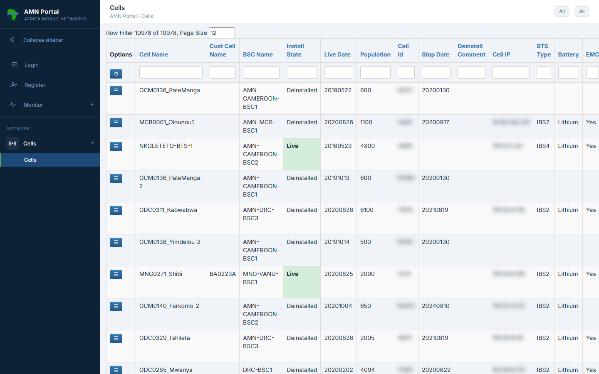
One row per cell — ~11,600 rows across the network.
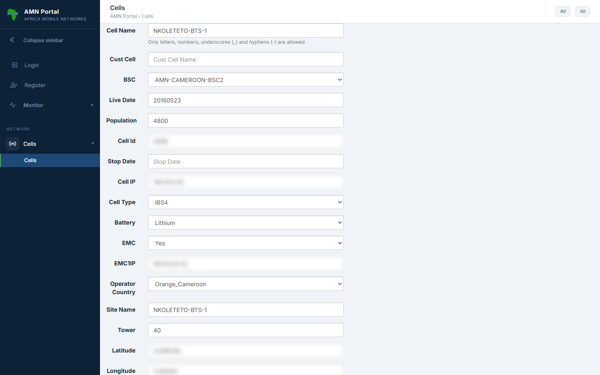
Editing a cell — ~20 fields, typed per cell.
Most fields are identical across a site's cells but typed separately for each · consistency between cells is up to you · going live = typing a Live Date, with no check that the cell is complete.
The new method
The /sites page new
One row per site. Status, pending-work badges and attention pills at a glance.
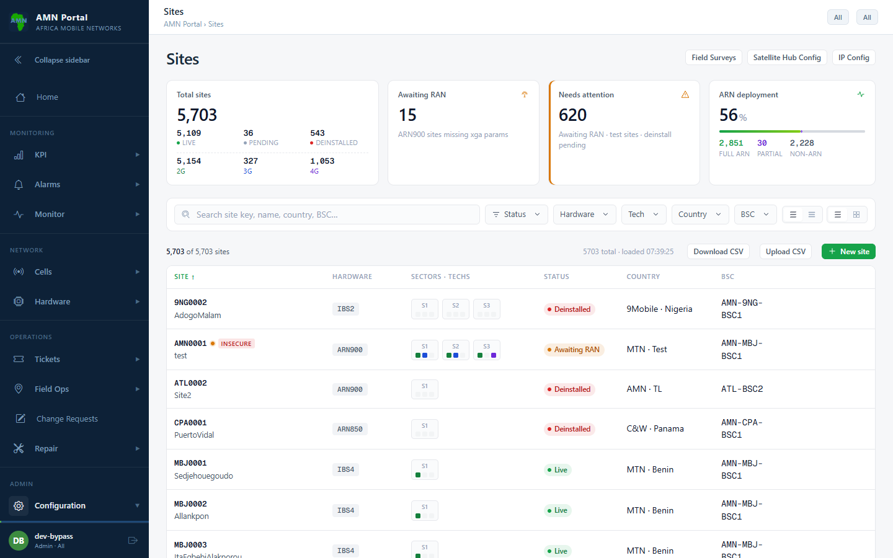
~6,000 sites with live status (Pending / Live / Deinstalled / Awaiting RAN), filters and search.
- Status pills reflect reality: ARN sites recompute from current RAN state, pending changes show as badges.
- Click any row to open the site drawer — everything about the site in one place.
- SSCO / RAN / ARN tools are one click away on each row.
Workflow 1 — new site
Creating a site
Define the site once. Cells are generated from the sector/tech matrix.
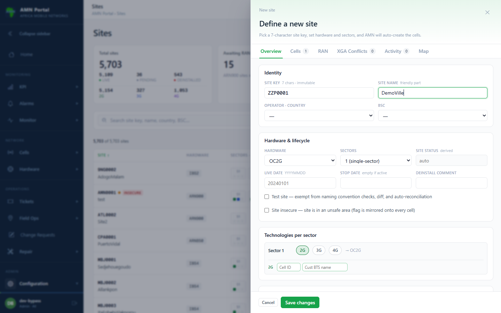
The New Site form — key, name, hardware type, sectors & techs.
1
Site Key — 3-letter network + 4 digits (e.g. MCB0123). Reserved forever once used.
2
Tick the techs per sector — e.g. S1: 2G+4G. Cell names like _‑1 / ‑2l are built for you, always correct.
3
Country auto-fills from the site key prefix (MCB → MTN Congo Brazzaville). No more mismatched countries.
4
IP plan — generate per-sector IPs from the network's master subnet, or type them. The system blocks duplicates.
5
Save — the site is created with its cells in Pending state, ready to complete before go-live.
Behind the IP plan
The IP Config page
Where the site IP plan gets its addresses — set once per system, then used by every allocation.
Master Subnets where
The pool a new site is allocated from.
- Keyed by Network (site-key prefix) + Backhaul — e.g.
MNG + Gilat → 193.21.0.0/16.
- More than one subnet per Network + Backhaul is allowed; the operator picks which at allocation time.
Cell-Map Configs how
The addressing scheme applied inside that subnet.
- Picked automatically by which subnet a site falls inside (CIDR containment).
- Set the per-block host layout: BTS / EMC / CCTV offsets and the cell mask (e.g.
/29).
- VLAN_99 / VLAN_67 shift EMC / CCTV into their VLAN regions;
0 = flat (e.g. Starlink).
- A locked Default scheme is the catch-all fallback and always stays last.
This is what powers Generate IP plan on the site form (and Auto-IP on CSV import) — and it highlights any overlapping subnets or CIDRs live as you type. Admin-only; changes apply to the current system (Production or Test).
Workflow 2 — day to day
The site drawer
Overview, Cells, RAN, XGA conflicts, Activity and Map — per site.
Overview — the shared site data, dates, IP plan and status.
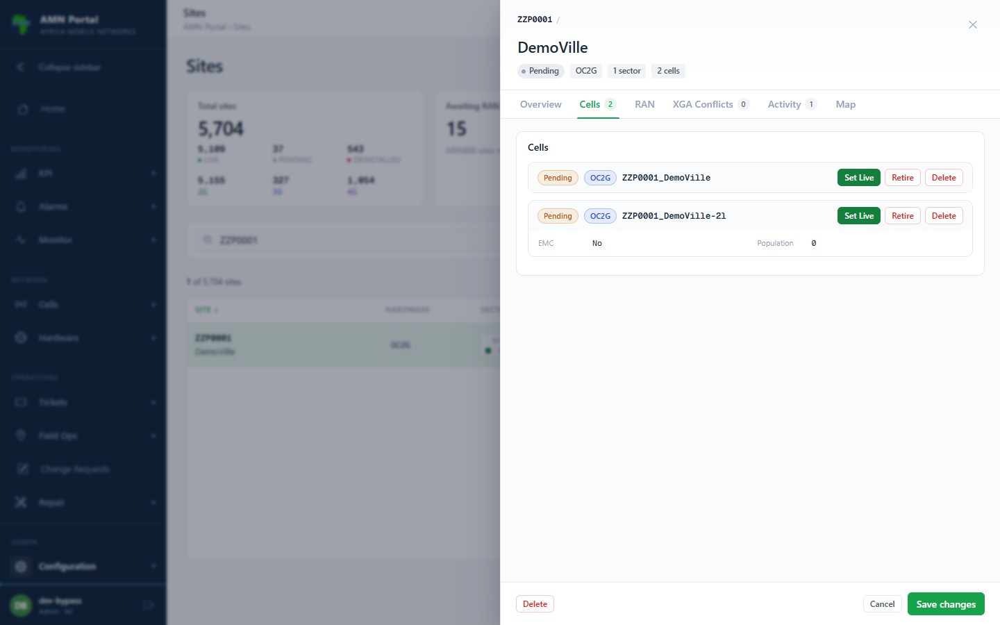
Cells — every cell with its state and per-cell actions (Set Live / Retire / Delete).
Editing a shared field (backhaul, BSC, coordinates…) prompts you to propagate it: apply to all live cells now, or queue it as a planned change that goes live with the field visit.
Workflow 3 — go-live
Going live — with a safety gate
A cell can only be set live when it carries everything the portal needs downstream.
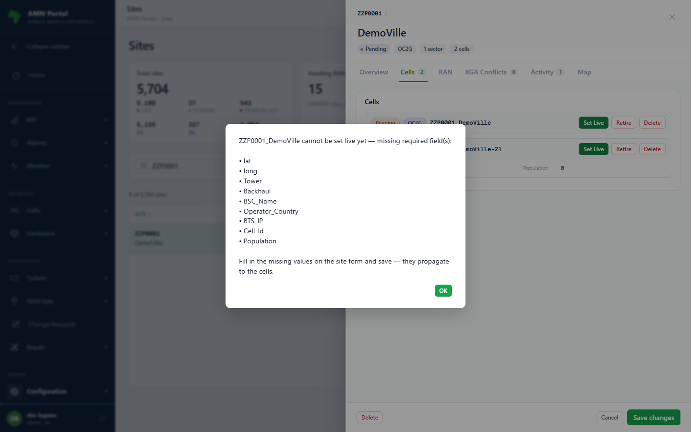
Set Live on an incomplete cell — the gate lists exactly what's missing.
The go-live checklist
- Cell ID + BSC — KPI data won't match without them
- Country — must agree with the site key prefix
- BTS IP — monitoring & IP derivation
- Backhaul, coordinates, tower height
- Population (2G cells)
The same checklist applies everywhere — the Set Live button, site saves and CSV imports. There is no back door. Fill the gaps on the site form and save; the values propagate to the cells.
Workflow 4 — changes & lifecycle
Editing cells — always at the site level
There is no per-cell edit form any more. You change the site, and the values flow down to its cells.
How a change reaches the cells
- Edit the field on the site form (backhaul, BSC, coordinates, tower, population, per-cell Cell IDs in the tech grid, IPs in the IP plan).
- On save you choose: Apply Immediately (live cells updated now) or Save as Pending (a planned change queued per cell, activated by ACS at the field visit).
- Pending skeleton cells are healed automatically on every site save — fill the gaps once, at the top.
Per-cell actions & lifecycle
- Pending → Set Live · Live → Retire → Deinstalled
- Delete = pending cells created in error only. Live cells must be retired; deinstalled cells are history and are never deleted — the site key stays reserved.
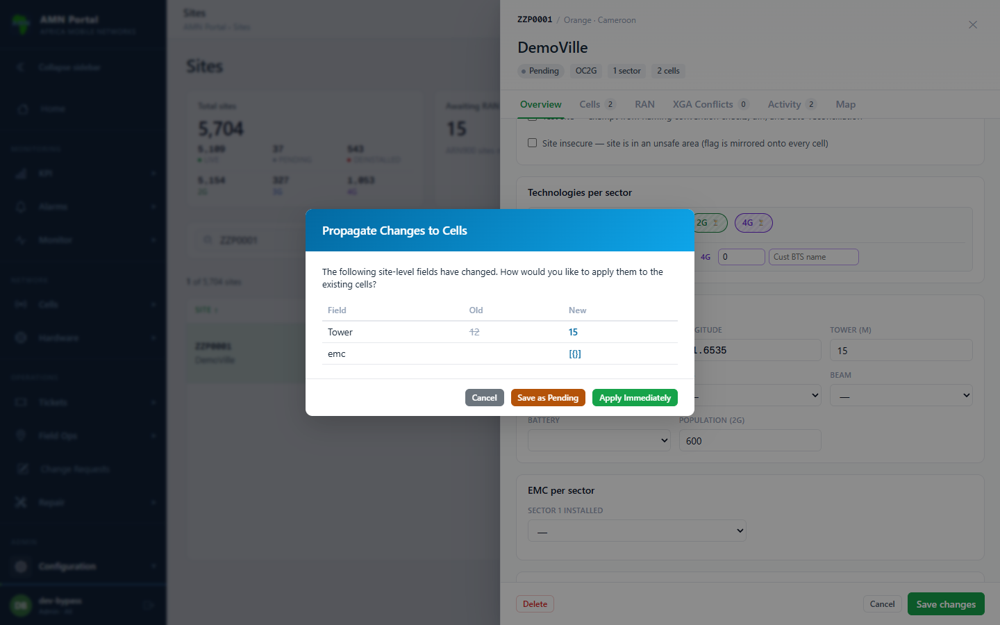
Saving a site change — choose Apply Immediately or Save as Pending (planned change); the prompt lists exactly which fields will flow to the cells.
In practice
A real multi-sector site
Production data in the new drawer.
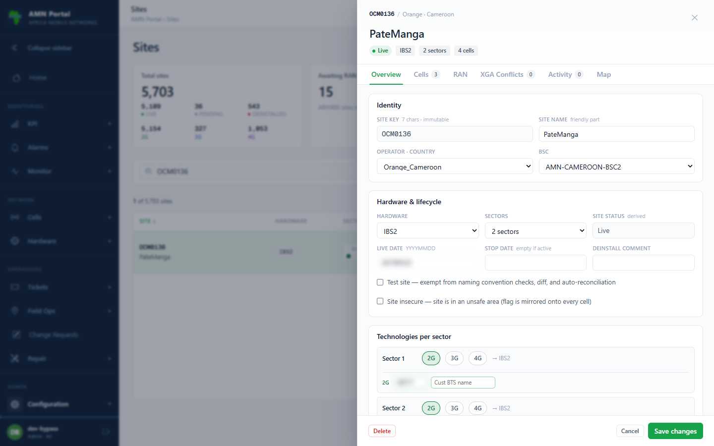
Overview of a live multi-sector site.
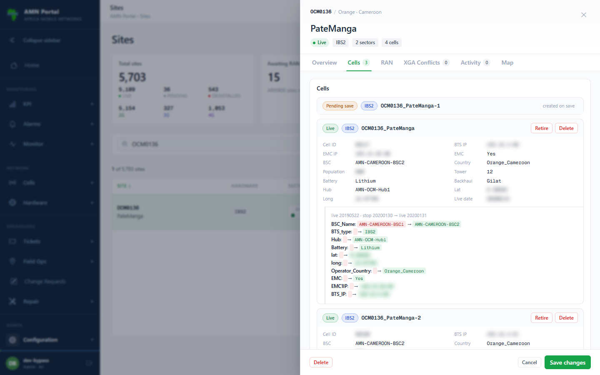
Cells tab — live cells, deinstall history, planned changes.
Workflow 5 — bulk
Bulk changes via CSV
Download → edit in Excel → upload → validate → commit. Same rules as the editor.
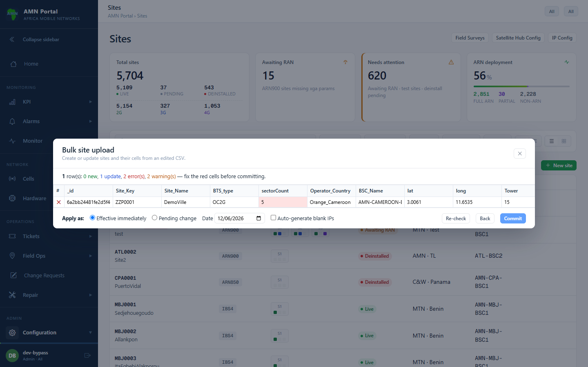
The validation preview — 2 errors, 2 warnings: invalid sectorCount (red) and a duplicate S1 2G Cell ID. Fix in place → Re-check → Commit unlocks when clean.
- One row per site; sector/tech columns define the cells.
- Rows with an
_id update; without one, create.
- Errors highlight the exact column at fault — nothing commits until clean.
- Auto-IP can fill blank sector IPs from the master subnet.
- Retire cells by filling the
StopDate column.
- Apply as Effective immediately or Pending change — same choice as the editor.
A CSV import goes through exactly the same checks as the on-screen editor — duplicate Cell IDs, duplicate IPs, go-live gate, country prefix rules.
Rollout
One switch, one editor siteModelActive
Exactly one page is editable at any time — enforced on screen and in the API.
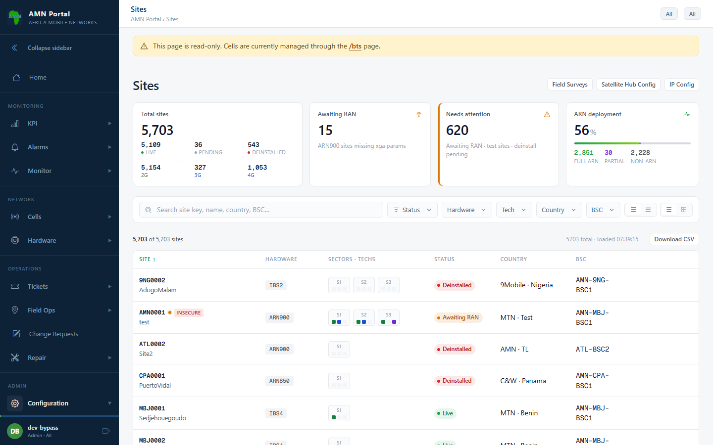
Today (switch OFF): /sites is read-only — browse it, get familiar; /bts still owns editing.
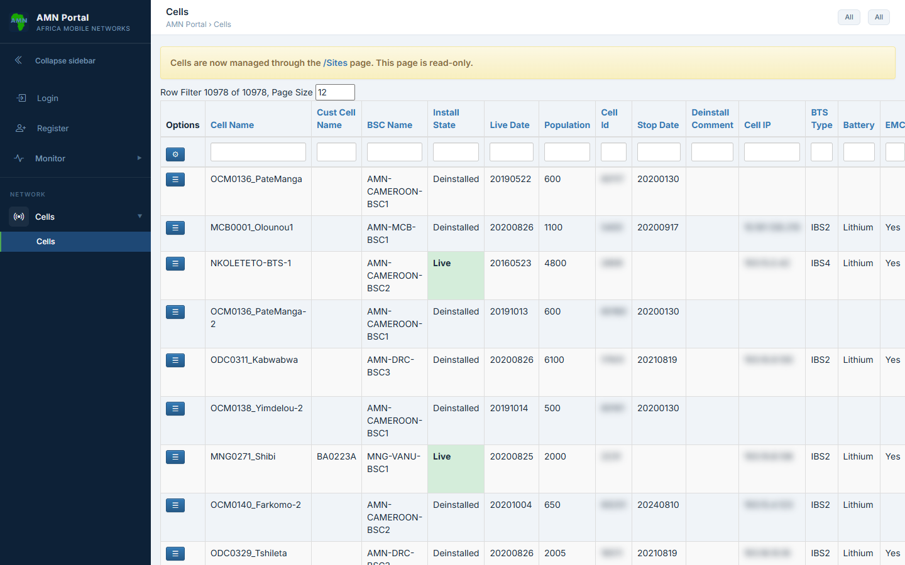
After cutover (switch ON): /bts becomes read-only; all editing moves to /sites.
The switch flips without a restart and can be flipped back. Both pages always show the same underlying cells, so nothing is lost either way.
Summary
Old vs new at a glance
| Task | /bts today | /sites |
|---|
| New 3-sector 2G+4G site | Type 6 cells by hand, repeat shared fields 6×, build names manually | One form: tick techs per sector — 6 correctly-named cells generated |
| Change site backhaul | Edit every cell individually | Edit once → propagate to all cells (now, or as planned change) |
| Go-live | Type a Live Date — no completeness check | Set Live button with a hard checklist (Cell ID, BSC, IP, country…) |
| Duplicate Cell ID / IP | Possible — found later when KPIs misbehave | Blocked at entry, on every path including CSV |
| Planned engineering change | Tracked outside the system | Queued pending copy per cell; ACS stamps it live at the visit |
| Site history | Scattered across cell rows | Activity tab: who changed what, when — per site |
| Bulk edits | BTS CSV (cell-per-row, minimal checks) | Site CSV with full validation preview before commit |
| Removing mistakes | Cells deletable (history at risk) | Only pending cells/sites deletable — live history is permanent |
Next steps
What this means for Operations
- Now: /sites is live in read-only — open it, find your sites, get comfortable. Nothing about your current workflow changes yet.
- At cutover: new sites, cell changes and go-lives move to /sites. /bts stays available read-only for reference.
- Your data is safer: the system now refuses the mistakes we used to have to find later — duplicate IDs/IPs, incomplete go-lives, wrong countries.
- Questions / feedback: raise with the portal team — the switch can be flipped back at any time during bedding-in.